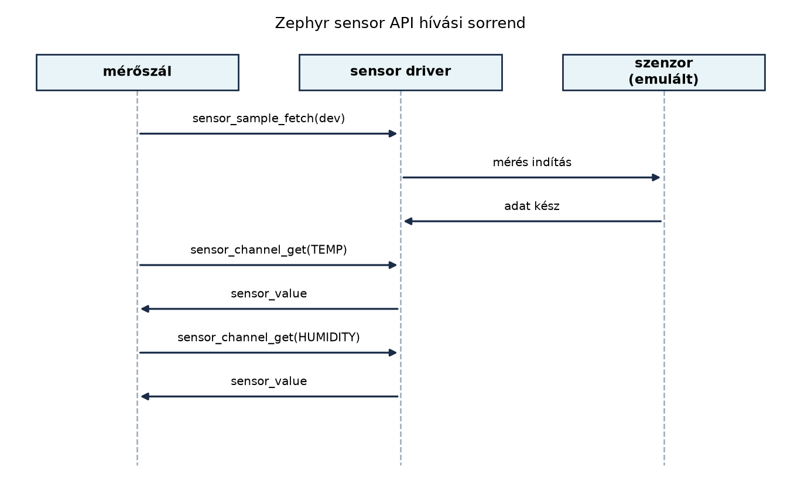

A TerraSense üvegház-monitorozó csomópontjának első és legfontosabb
feladata, hogy a környezeti adatokat megbízhatóan, a fizikai valóságnak
megfelelően kiolvassa. A hőmérséklet és a relatív páratartalom olyan
analóg jelek, amelyeket a mikrovezérlő digitális világába át kell
ültetni. A Zephyr RTOS ezt a feladatot a sensor API
mögé szervezi: nem kell ismernünk az adott szenzor I2C- vagy
SPI-regisztereit, a driverréteg már elvégzi a nyers bájtok és a fizikai
mennyiségek közötti átalakítást. Ebben az alfejezetben bekötjük a
ts-node emulált hőmérséklet- és páratartalom-szenzorát, és
egy újrahasznosítható mérési függvényt készítünk, amelyet a későbbi
szűrés, architektúra- és hálózati rétegek is használnak.
Az előző alfejezetben (Szinkronizáció és
üzenetátadás) definiáltuk a ts_sample rekordot és az
sample_msgq üzenetsort. Most ezt a struktúrát töltjük meg
éles, szenzorból származó adatokkal. A cél, hogy a mérőszál ne
keveredjen a kommunikációval: a mérési logika egyetlen függvényben
legyen, amely bármelyik későbbi rétegből hívható.
A Zephyr szenzormodell két műveletet választ szét: az adatgyűjtést és az adatlekérdezést. Ez azért fontos, mert sok szenzor nem folyamatosan mér, hanem csak egy trigger hatására indít mintavételt (például egy I2C-parancs után néhány milliszekundumig tart az analóg-digitális átalakítás).
Definíció (sensor API fetch/get).
A sensor_sample_fetch() hívás utasítja a driver-t, hogy
indítson el egy mérési ciklust, és várja meg, amíg az adat rendelkezésre
áll. A sensor_channel_get() ezt követően kérdezi le a
kiválasztott csatorna (például hőmérséklet, páratartalom) értékét. A
fetch tehát az adatgyűjtés, a get a már
begyűjtött adat kiolvasása.
A csatornák az enum sensor_channel értékeivel
azonosíthatók: SENSOR_CHAN_AMBIENT_TEMP a környezeti
hőmérséklet, SENSOR_CHAN_HUMIDITY a relatív páratartalom,
SENSOR_CHAN_PRESS a légnyomás, és így tovább.
A mért értéket a driver a sensor_value struktúrában adja
vissza:
struct sensor_value {
int32_t val1;
int32_t val2;
};A val1 az egész rész, a val2 a
mikro-egységben kifejezett törtrész (általában 10⁻⁶, de a driver ettől
eltérő felbontást is használhat). A javasolt átváltás a
sensor_value_to_double() függvénnyel történik.

A Zephyr eszközmodellben a szenzor is egy device
objektum. A devicetree-ben definiált csomópontból a
DEVICE_DT_GET_ANY() makróval vagy egy node label-lel
kérhető le a mutató:
const struct device *dev = DEVICE_DT_GET_ANY(zephyr_sensor_sim);Ezután a device_is_ready(dev) ellenőrzi, hogy a driver
inicializálódott-e, és a hardver elérhető-e. Ha a mutató
NULL vagy a device_is_ready() hamis, akkor nem
szabad hívni a sensor API-t.
A hiba- és állapotkezelés a Zephyr negatív errno-konvencióját követi:
a függvények 0-t adnak vissza siker esetén, hiba esetén pedig
-ENODEV, -EBUSY, -EIO és hasonló
értékeket. A mérési ciklusban ezekre külön reagálhatunk: az
-EBUSY és -EAGAIN átmeneti hibák, amelyek után
érdemes rövid késleltetéssel újra próbálkozni.
A szenzor API-n belül több tervezési döntés is felmerül:
| Kérdés | Opciók | Mire érdemes figyelni |
|---|---|---|
| Fetch és get szétválasztása | a) sensor_sample_fetch() + több
sensor_channel_get() b)
sensor_sample_fetch_chan(dev, chan) csatornánként |
a) hatékonyabb, ha egyszerre több csatornát olvasunk; b) egyszerűbb, de többszöri mérést indíthat |
| Érték kinyerése | val1/val2 közvetlen feldolgozása vagy
sensor_value_to_double() |
Lebegőpontos lebegés pontossága elegendő; ha bitpontos átvitel kell,
őrizzük meg a nyers sensor_value párt |
| Hiba újrapróbálkozás | azonnali visszatérés, fix késleltetés, exponenciális visszavonulás | Átmeneti -EBUSY esetén rövid késleltetés; tartós hiba
esetén jelezzük a felügyeleti rétegnek |
| Szenzor kiválasztása | gyártó-specifikus driver vs. emulált sensor_sim |
native_sim-en a zephyr,sensor-sim
használható; éles hardverre a devicetree overlay cseréje szükséges |
A TerraSense esetében a fetch/get szétválasztást választjuk, mert egyetlen fetch-csel mindkét csatornát (hőmérséklet, páratartalom) be tudjuk tölteni. A talajnedvesség mérése későbbi laborban kerül hozzá.
sensor_value átváltás és minta kitöltéseTegyük fel, hogy a hőmérséklet-szenzor a sensor_value
struktúrában a következőt adja vissza:
val1 = 23, val2 = 450000 →
23,45 °Cval1 = 45, val2 = 200000 →
45,20 %RHA sensor_value_to_double() ezt a két mezőt
val1 + val2 * 1e-6 módon összegzi. A mérési függvényünk
ezeket az értékeket a ts_sample struktúrába írja:
sample->temp_c = sensor_value_to_double(&temp_val);
sample->humidity_rh = sensor_value_to_double(&hum_val);
sample->soil_moisture_pct = 0.0; /* most nem mért csatorna */A ts_sample seq (sorszám) és
ts_ms (időbélyeg) mezőit a mérőszál tölti ki, mert azok nem
a szenzor driver hatáskörébe tartoznak. A seq egy monoton
növekvő egyedi azonosító, a ts_ms jelen laborban a
k_uptime_get() értéke (a rendszer indulása óta eltelt
ezredmásodperc), ami a szimulációban elegendő. Valós rendszerben ezt a
gateway vagy az RTC-alapú időszinkron váltja fel, ahogy azt az Idő az IoT-ban alfejezet tárgyalja.
ts-node
emulált szenzorralMunkakönyvtár:
mkdir -p ~/iot-labor/i013 && cd ~/iot-labor/i013
mkdir -p src boardsElőfeltétel: a Szinkronizáció és
üzenetátadás: mutex, szemafor, üzenetsor, work queue laborban
létrehozott ts_sample struktúra és sample_msgq
mintáját itt újrahasznosítjuk. A teljes fájlt a Szenzorolvasás a Zephyr sensor API-val alfejezetben
készítjük el, de a korábbi labor logikáját megtartjuk.
Fájlok:
CMakeLists.txt:cmake_minimum_required(VERSION 3.20.0)
find_package(Zephyr REQUIRED HINTS $ENV{ZEPHYR_BASE})
project(ts-node-sensor)
target_sources(app PRIVATE src/main.c)prj.conf:CONFIG_LOG=y
CONFIG_SENSOR=y
CONFIG_SENSOR_SIM=y
CONFIG_SENSOR_LOG_LEVEL_DBG=yboards/native_sim.overlay:/ {
sensim: sensim {
compatible = "zephyr,sensor-sim";
};
};src/main.c:#include <zephyr/kernel.h>
#include <zephyr/device.h>
#include <zephyr/drivers/sensor.h>
#include <zephyr/logging/log.h>
LOG_MODULE_REGISTER(sensor_app, LOG_LEVEL_INF);
struct ts_sample {
uint32_t seq;
uint64_t ts_ms;
double temp_c;
double humidity_rh;
double soil_moisture_pct;
};
K_MSGQ_DEFINE(sample_msgq, sizeof(struct ts_sample), 8, 4);
static int sensor_read_sample(const struct device *dev, struct ts_sample *sample)
{
struct sensor_value temp_val, hum_val;
int ret;
if (!dev) {
return -EINVAL;
}
ret = sensor_sample_fetch(dev);
if (ret != 0) {
LOG_ERR("fetch failed: %d", ret);
return ret;
}
ret = sensor_channel_get(dev, SENSOR_CHAN_AMBIENT_TEMP, &temp_val);
if (ret != 0) {
LOG_ERR("temp get failed: %d", ret);
return ret;
}
ret = sensor_channel_get(dev, SENSOR_CHAN_HUMIDITY, &hum_val);
if (ret != 0) {
LOG_ERR("humidity get failed: %d", ret);
return ret;
}
sample->temp_c = sensor_value_to_double(&temp_val);
sample->humidity_rh = sensor_value_to_double(&hum_val);
sample->soil_moisture_pct = 0.0; /* nem mért ebben a laborban */
return 0;
}
static void sensor_thread(void *arg1, void *arg2, void *arg3)
{
const struct device *dev = (const struct device *)arg1;
uint32_t seq = 0;
while (1) {
struct ts_sample sample;
int ret = sensor_read_sample(dev, &sample);
if (ret == 0) {
sample.seq = ++seq;
sample.ts_ms = k_uptime_get();
if (k_msgq_put(&sample_msgq, &sample, K_NO_WAIT) != 0) {
LOG_WRN("sample queue full, dropping");
} else {
LOG_INF("sample seq=%u temp=%.2f hum=%.2f",
sample.seq, sample.temp_c, sample.humidity_rh);
}
} else if (ret == -EBUSY || ret == -EAGAIN) {
LOG_WRN("sensor busy, retrying");
k_sleep(K_MSEC(50));
continue;
} else {
LOG_ERR("sensor read failed: %d, skipping cycle", ret);
}
k_sleep(K_MSEC(1000));
}
}
K_THREAD_DEFINE(sensor_tid, 2048, sensor_thread, NULL, NULL, NULL,
K_PRIO_PREEMPT(8), 0, 0);
void main(void)
{
const struct device *dev = DEVICE_DT_GET_ANY(zephyr_sensor_sim);
if (!device_is_ready(dev)) {
LOG_ERR("sensor device not ready");
return;
}
LOG_INF("TerraSense sensor thread started");
}Build és futtatás:
cd ~/iot-labor/i013
west build -b native_sim
./build/zephyr/zephyr.exeVárt kimenet (részlet):
[00:00:00.000,000] <inf> sensor_app: TerraSense sensor thread started
[00:00:01.000,000] <inf> sensor_app: sample seq=1 temp=25.01 hum=48.72
[00:00:02.000,000] <inf> sensor_app: sample seq=2 temp=25.04 hum=48.60
...A sensor_sim driver szinuszosan változtatja az
értékeket, ezért a hőmérséklet és páratartalom kis mértékben ingadozik.
A pontos értékek a szimulátor konfigurációjától függenek.
Takarítás:
A labor saját könyvtárának tartalmát törölhetjük, de a továbbvitt
eredmény miatt célszerű megőrizni a src/main.c, a
boards/native_sim.overlay és a prj.conf
fájlokat. A build mappa és az ideiglenes állományok
rm -rf build paranccsal távolíthatók el.
Az alábbi táblázat a labor során gyakran előforduló hibákat és azok javítását foglalja össze.
| Tünet | Ok | Javítás |
|---|---|---|
device_is_ready hamis,
sensor device not ready log |
A devicetree overlay nem töltődött be, vagy a driver Kconfig nem engedélyezett | Ellenőrizzük a boards/native_sim.overlay fájlt és a
CONFIG_SENSOR_SIM=y bejegyzést; töröljük a
build mappát, és futtassunk újra
west build-et |
fetch failed: -22 (-EINVAL) |
A devicetree-ből kapott device pointer érvénytelen, vagy a csatorna nem támogatott | Használjuk a DEVICE_DT_GET_ANY(zephyr_sensor_sim)
makrót, és ellenőrizzük a devicetree node compatible értékét |
temp get failed: -95 (-ENOTSUP) |
A szenzor driver nem támogatja a kért csatornát | Ellenőrizzük a SENSOR_CHAN_AMBIENT_TEMP és
SENSOR_CHAN_HUMIDITY támogatását a driver
dokumentációjában; más csatornát kérünk le |
sample queue full, dropping |
A fogyasztó szál nem fut, vagy túl lassú | Növeljük a sample_msgq méretét, vagy csökkentsük a
mintavételi gyakoriságot |
| A logban csak 0,00 értékek jelennek meg | A sensor_value_to_double nem a várt típust kapja, vagy
a driver nem állítja be az értékeket |
Ellenőrizzük a sensor_value struktúra
val1/val2 tartalmát debug loggal |
A fetch és a get
összekeverése.
Gyakori hiba, hogy a fejlesztő minden sensor_channel_get()
előtt új fetch-et hív, vagy éppen fordítva, elfelejti a
fetch-et. Az első esetben a mérés feleslegesen lassul és nő
az energiafogyasztás, a másodikban viszont ugyanazt az adatot olvassuk
ki többször, vagy elavult értéket kapunk. A szabály: egy
fetch után több get jön, amíg új mérésre nincs
szükség.
Lebegőpontos pontosság túlértékelése.
A sensor_value_to_double() kényelmes, de lebegőpontos
reprezentációja nem alkalmas minden esetben. Ha például a hőmérsékletet
tized fok pontossággal akarjuk elküldeni, a double értékből
kerekítés után pontatlanság keletkezhet. Ilyenkor jobb a nyers
sensor_value párt megőrizni, és csak a megjelenítésnél
konvertálni.
Hibakezelés hiánya az átmeneti hibáknál.
A sensor_sample_fetch() -EBUSY hibával is
visszatérhet, ha a driver éppen egy másik mérést végez. Ha ezt a hibát
tartós hibaként kezeljük és leállítjuk a mérést, a szenzor kiesik a
rendszerből. A helyes megoldás a rövid késleltetés utáni
újrapróbálkozás, ahogy a labor kódja teszi.
(a) Fogalmi kérdés
Mi a különbség a sensor_sample_fetch() és a
sensor_channel_get() között? Miért választja szét a Zephyr
ezt a két műveletet?
(b) Számolási/tervezési feladat
Egy szenzor a hőmérsékletet sensor_value formában adja
vissza: val1 = -5, val2 = 250000. Hány °C az
érték? Ha a relatív páratartalom val1 = 99,
val2 = 900000, akkor hány százalék? Írd le az átváltás
képletét.
(c) Implementációs feladat
Egészítsd ki a labor sensor_read_sample() függvényét úgy,
hogy a hívás legfeljebb háromszor próbálkozzon meg a
sensor_sample_fetch() hívással, ha az -EBUSY
vagy -EAGAIN hibát ad. Minden próbálkozás között 50 ms-ot
várjon. Ha a harmadik próbálkozás is sikertelen, a függvény adja vissza
az utolsó hibakódot.
(d) Kiterjesztési feladat
A TerraSense rendszerben talajnedvesség-mérésre is szükség van. Tegyük
fel, hogy a fejlesztőkártyán egy külön szenzor van, amely a
SENSOR_CHAN_DIE_TEMP csatornát használja a
talajhőmérséklethez. Egészítsd ki a sensor_read_sample()
függvényt, hogy ha a devicetree-ben létezik egy második szenzor
(DEVICE_DT_GET_ANY(zephyr_soil_sim)), olvassa le annak a
hőmérsékletét is, és töltse be a
ts_sample.soil_moisture_pct helyett egy új mezőbe (például
soil_temp_c). A feladat célja a több szenzor kezelésének
gyakorlása; a devicetree módosítása is szükséges.
(a)
A sensor_sample_fetch() utasítja a szenzort a mérés
elvégzésére, és megvárja, amíg az adat rendelkezésre áll. A
sensor_channel_get() a már begyűjtött adatot olvassa ki a
kiválasztott csatornából. A szétválasztás lehetővé teszi, hogy egyetlen
fetch-csel több csatornát is lekérjünk, és a driver egyszerre töltse fel
a belső pufferét.
(b)
A sensor_value értéke =
val1 + val2 * 1e-6.
Hőmérséklet:
°C.
Páratartalom:
%RH.
(c)
static int sensor_read_sample(const struct device *dev, struct ts_sample *sample)
{
struct sensor_value temp_val, hum_val;
int ret;
int attempts;
if (!dev) {
return -EINVAL;
}
for (attempts = 0; attempts < 3; attempts++) {
ret = sensor_sample_fetch(dev);
if (ret == 0) {
break;
}
if (ret == -EBUSY || ret == -EAGAIN) {
LOG_WRN("fetch busy, attempt %d/3", attempts + 1);
k_sleep(K_MSEC(50));
continue;
}
LOG_ERR("fetch failed: %d", ret);
return ret;
}
if (ret != 0) {
LOG_ERR("fetch failed after retries");
return ret;
}
ret = sensor_channel_get(dev, SENSOR_CHAN_AMBIENT_TEMP, &temp_val);
if (ret != 0) {
LOG_ERR("temp get failed: %d", ret);
return ret;
}
ret = sensor_channel_get(dev, SENSOR_CHAN_HUMIDITY, &hum_val);
if (ret != 0) {
LOG_ERR("humidity get failed: %d", ret);
return ret;
}
sample->temp_c = sensor_value_to_double(&temp_val);
sample->humidity_rh = sensor_value_to_double(&hum_val);
sample->soil_moisture_pct = 0.0;
return 0;
}(d)
A devicetree overlay bővítése:
/ {
sensim: sensim {
compatible = "zephyr,sensor-sim";
};
soil_sensim: soil_sensim {
compatible = "zephyr,soil-sim";
};
};A C kódban:
static int sensor_read_sample(const struct device *dev,
const struct device *soil_dev,
struct ts_sample *sample)
{
struct sensor_value temp_val, hum_val, soil_temp_val;
int ret;
if (!dev || !soil_dev) {
return -EINVAL;
}
ret = sensor_sample_fetch(dev);
if (ret != 0) {
LOG_ERR("fetch failed: %d", ret);
return ret;
}
ret = sensor_channel_get(dev, SENSOR_CHAN_AMBIENT_TEMP, &temp_val);
if (ret != 0) {
LOG_ERR("temp get failed: %d", ret);
return ret;
}
ret = sensor_channel_get(dev, SENSOR_CHAN_HUMIDITY, &hum_val);
if (ret != 0) {
LOG_ERR("humidity get failed: %d", ret);
return ret;
}
ret = sensor_sample_fetch(soil_dev);
if (ret != 0) {
LOG_ERR("soil fetch failed: %d", ret);
return ret;
}
ret = sensor_channel_get(soil_dev, SENSOR_CHAN_DIE_TEMP, &soil_temp_val);
if (ret != 0) {
LOG_ERR("soil temp get failed: %d", ret);
return ret;
}
sample->temp_c = sensor_value_to_double(&temp_val);
sample->humidity_rh = sensor_value_to_double(&hum_val);
sample->soil_moisture_pct = 0.0;
sample->soil_temp_c = sensor_value_to_double(&soil_temp_val);
return 0;
}Megjegyzés: a compatible = "zephyr,soil-sim" kitalált,
valós driver helyett a zephyr,sensor-sim egy másik
példányát is használhatjuk, és a csatornát a devicetree-ben kell
beállítani. A feladat célja a több szenzorpéldány kezelésének
gyakorlása.
A Zephyr sensor API a mérést két fázisra bontja:
sensor_sample_fetch() indítja az adatgyűjtést,
sensor_channel_get() pedig kiolvassa a kiválasztott
csatorna értékét. A mért érték sensor_value struktúrában
érkezik, amelyet sensor_value_to_double() segítségével
fizikai mennyiséggé alakítunk. A laborban bekötöttük az emulált
hőmérséklet- és páratartalom-szenzort, és létrehoztuk a
sensor_read_sample() függvényt, amely a
ts_sample struktúrát tölti meg. A mérőszál ezt a mintát az
sample_msgq üzenetsoron továbbítja, seq
sorszámmal és ts_ms uptime időbélyeggel. Továbbvitt
eredmény: a sensor_read_sample() függvény, a
ts_sample struktúra, a sample_msgq és a
devicetree node sensim; ezt használja az Mintavétel, kalibráció és szűrés alfejezet a
szűrőlogika beépítéséhez, az Eszközszoftver-architektúra: rétegek és
állapotgépek alfejezet a rétegek kialakításához, és az IP az eszközön: IPv6, 6LoWPAN, Thread és a Zephyr
hálózati stack alfejezet a hálózati küldéshez. A laborfájlok:
~/iot-labor/i013/CMakeLists.txt,
~/iot-labor/i013/prj.conf,
~/iot-labor/i013/boards/native_sim.overlay,
~/iot-labor/i013/src/main.c.
A Zephyr sensor API (sensor_sample_fetch,
sensor_channel_get, sensor_value) nevei és a
native_sim build menete a Zephyr hivatalos
dokumentációjából származnak. A zephyr,sensor-sim
compatible string és a CONFIG_SENSOR_SIM Kconfig név a
telepített Zephyr-verzióban ellenőrizendő; a fenti példa a leggyakrabban
használt változatot mutatja, de a build rendszer pontos neve verziófüggő
lehet. A DEVICE_DT_GET_ANY() makró használata szintén a
Zephyr aktuális API-ját feltételezi; ha a fejlesztői környezet régebbi
verziót használ, a DT_DRV_COMPAT definíciót kell
megvizsgálni. A sensor_sim driver által generált értékek
pontossága és időbeli viselkedése illusztratív, nem valós szenzor mérési
eredménye.